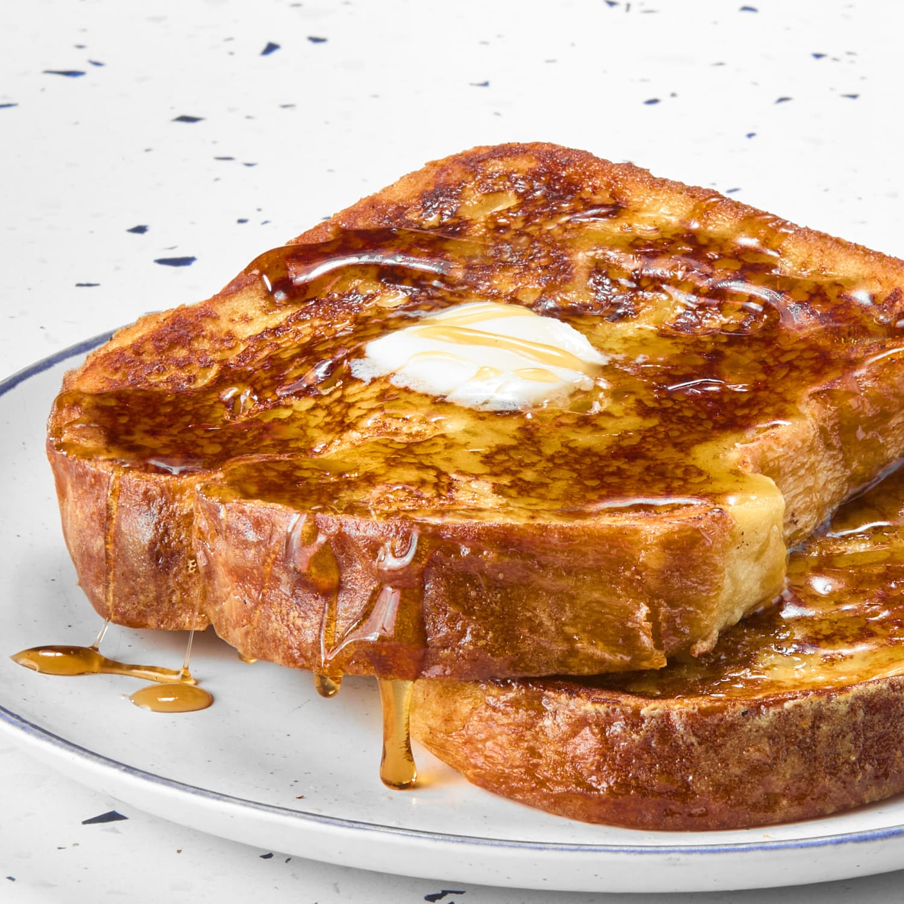

French Toast
This is my personal favorite breakfast item,
I hope you enjoy it too!

Serves about 3 people
Ingredients needed:
- 2 eggs
- 1/2 cup of milk
- 1/4 teaspoon vanilla extract
- 1/2 teaspoon cinnamon sugar
- 6 slices of stale bread
Cooking Directions:
-
beat eggs in a shallow bowl. Add milk, vanilla,
and cinammon sugar, and beat until frothy.
-
Soak each slice of bread in the egg mixture,
first on one side, then the other.
-
Cook both sides in a greased non-stick skillet
until golden.
Want to try our other recipes, or return home?